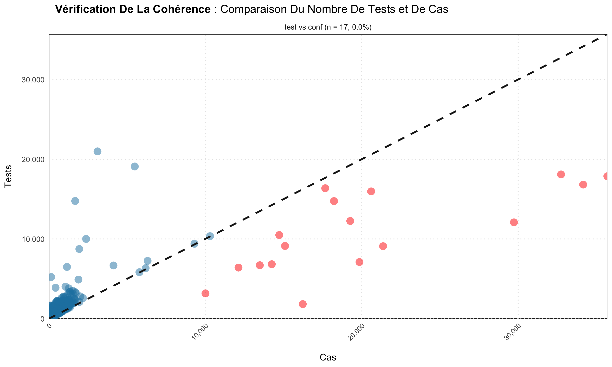
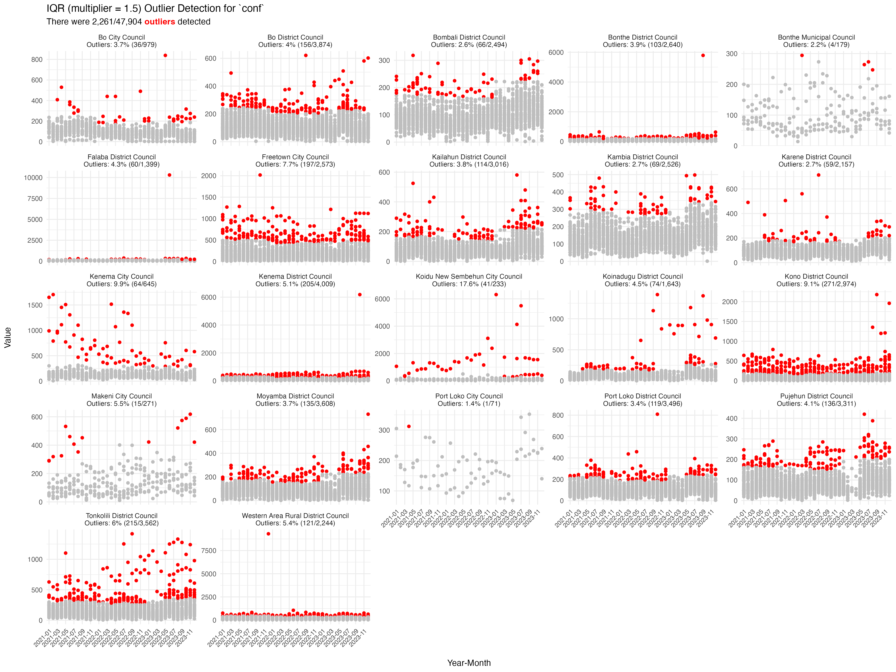
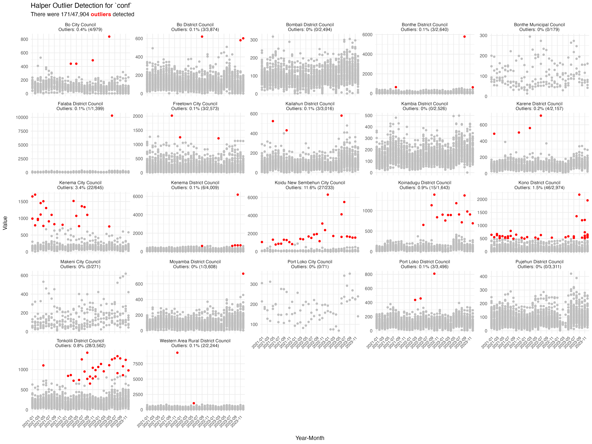
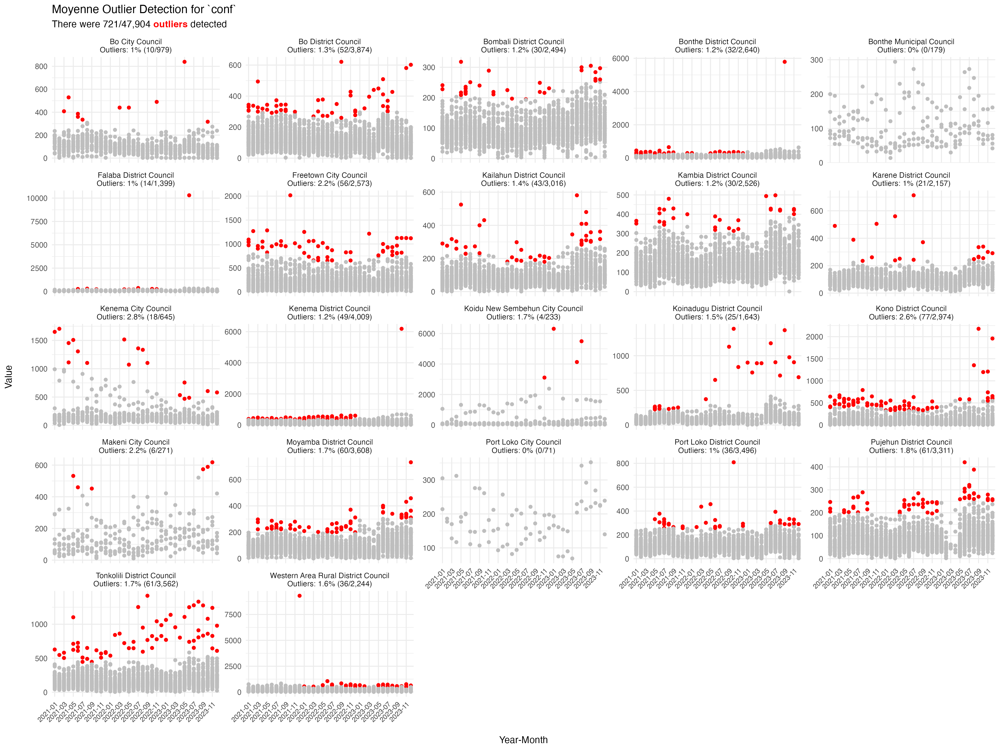

Reporting completeness (covered in Reporting rates) tells us whether facilities reported. This article covers the next two quality questions: are the values they reported internally consistent, and are there outliers that need correcting before modelling?
library(sntutils)
sl_dhis2 <- read(
system.file("extdata", "sl_exmaple_dhis2.rds", package = "sntutils")
) |>
dplyr::rename(year_mon = date) |>
dplyr::filter(year_mon >= "2020.01") |>
dplyr::mutate(
hf_uid = vdigest(paste0(adm1, adm2, hf), algo = "xxhash32"),
record_id = vdigest(paste(hf_uid, year_mon), algo = "xxhash32")
)For the methodology and conceptual background behind the steps in this article, please check the SNT Code Library:
- Quality control (consistency checks) - cascade logic and red flags.
- Outlier detection - when to use mean, median or IQR rules.
- Outlier correction - decision rules for replacing flagged values.
- Missing data - patterns and what to do about them.
- Imputation - replacement strategies in context.
Consistency checks
The malaria care cascade has a fixed direction: outpatients ≥
suspected ≥ tested ≥ confirmed ≥ treated, and
admissions ≥ malaria admissions ≥ malaria deaths.
consistency_check() flags facility-months that violate any
of these and renders a scatter of input vs output with the violating
points highlighted.
Common cascade checks include:
- All outpatients ≥ suspected malaria
- Malaria tests ≥ confirmed cases
- Confirmed cases ≥ cases treated
- All admissions ≥ malaria admissions
- Malaria admissions ≥ malaria deaths
# tests (inputs) vs confirmed cases (outputs)
consistency_check(
sl_dhis2,
inputs = c("test"),
outputs = c("conf")
)
# save the plot
consistency_check(
sl_dhis2,
inputs = c("test"),
outputs = c("conf"),
save_plot = TRUE,
plot_path = "plots/consistency_check_plots"
)
# translated labels (French)
consistency_check(
sl_dhis2,
inputs = c("test"),
outputs = c("conf"),
target_language = "fr"
)
# multiple cascades at once
consistency_check(
sl_dhis2,
inputs = c("test", "conf", "alladm"),
outputs = c("conf", "maltreat", "maladm"),
target_language = "fr"
)
Mapping consistency
consistency_map() renders a choropleth of
cascade-violation rates by admin unit - useful for spotting whether the
cascade is breaking in particular districts vs. system-wide:
consistency_map(
data = sl_dhis2,
shapefile = sle_adm2_clean,
input_var = "test",
output_var = "conf",
adm_var = "adm2",
x_var = "year",
language = "en"
)Outlier detection
detect_outliers() flags unusual values in a numeric
column using three complementary methods, with detection done
within groups of admin unit × facility × year so
seasonal and contextual variation isn’t mistaken for noise:
- Mean ± 3 SD - classic, parametric, sensitive to extremes.
- Median ± 15 × MAD - robust, the workhorse for surveillance data.
-
Tukey’s fences - quartile-based, tunable via
iqr_multiplier.
outlier_results <- detect_outliers(
data = sl_dhis2,
column = "conf",
yearmon = "year_mon",
record_id = "record_id",
adm1 = "adm1",
adm2 = "adm2",
iqr_multiplier = 2
)
outlier_results |>
dplyr::select(record_id, value, outliers_iqr, outliers_median, outliers_mean) |>
utils::tail()
#> # A tibble: 6 × 5
#> record_id value outliers_iqr outliers_median outliers_mean
#> <chr> <dbl> <chr> <chr> <chr>
#> 1 e8947016 321 normal value normal value normal value
#> 2 28b6ea90 353 normal value normal value normal value
#> 3 8aa281d9 246 normal value normal value normal value
#> 4 8b337b53 305 normal value normal value normal value
#> 5 7358f600 284 normal value normal value normal value
#> 6 499f0390 309 normal value normal value normal valueThe output has one row per record. Join back on
record_id and filter or correct as needed.
Visualising outliers
outlier_plot() returns a list of ggplot
objects - one per method - faceted by district and coloured by status.
Facet labels show the share of outliers in each district.
plots <- outlier_plot(
data = sl_dhis2,
column = "conf",
record_id = "record_id",
adm1 = "adm1",
adm2 = "adm2",
yearmon = "year_mon",
methods = c("iqr", "median", "mean")
)
plots$iqr
plots$median
plots$mean
Correcting outliers and imputing missingness
Once outliers are identified, correct_outliers()
replaces flagged values using one of several strategies:
sl_corrected <- correct_outliers(
data = sl_dhis2,
outliers = outlier_results,
column = "conf",
method = "moving_average",
flag_method = "iqr"
)The supporting functions:
-
impute_outlier_ma()- moving-average imputation; the workhorse insidecorrect_outliers()whenmethod = "moving_average". -
impute_higher_admin()- borrow strength from the parent admin unit when the facility’s own history is too sparse to support a within-unit estimate. -
fallback_diff(),fallback_row_sum(),safe_sum()- defensive numerical helpers used inside the imputation paths. They tolerate all-NA rows, return zeros where appropriate, and refuse to silently sum characters.
A quality pipeline, end to end
# 1. cascade consistency at the facility-month level
cascade <- consistency_check(
data = sl_dhis2,
inputs = c("test", "conf"),
outputs = c("conf", "maltreat"),
show_plot = FALSE
)
# 2. detect outliers on confirmed cases
outliers <- detect_outliers(
data = sl_dhis2,
column = "conf",
yearmon = "year_mon",
record_id = "record_id",
adm1 = "adm1",
adm2 = "adm2"
)
# 3. correct using a moving average, flagged by the robust median rule
sl_clean <- correct_outliers(
data = sl_dhis2,
outliers = outliers,
column = "conf",
method = "moving_average",
flag_method = "median"
)The output is sl_clean - same shape as the input but
with flagged-and-replaced values - plus diagnostic objects
(cascade, outliers) you can hand to reviewers
as evidence for why each record was edited.